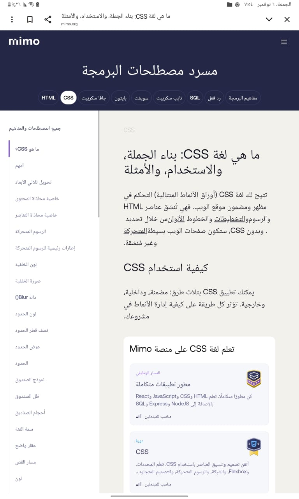

الطالبه: ناهد السيد محمد
الرقم الجامعي: 2503463
سكشن:159
الشعبه:عامه
مادة:تطبيقات الانترنت
لغة CSS (Cascading Style Sheets) هي لغة تستخدم لوصف تصميم صفحة ويب. تُستخدم CSS لتحديد أسلوب العناصر مثل الألوان, الأحجام, والتنسيق.
تستخدم CSS لتحديد أسلوب العناصر مثل الألوان, الأحجام, والتنسيق.
CSS هي لغة تصميم تستخدم لتحديد شكل ومظهر صفحات الويب. تُستخدم CSS لتحديد الألوان, الخطوط, المسافات, والتنسيق العام للعناصر في الصفحة.
تُستخدم CSS لتحديد أسلوب العناصر مثل الألوان, الأحجام, والتنسيق
يمكن استخدام CSS لتحديد المسافات بين العناصر, وكذلك تحديد الحدود حول العناصر. يمكن تحديد سمك الحدود, لونها, ونمطها.
يمكن استخدام CSS لتحديد المسافات بين العناصر, وكذلك تحديد الحدود حول العناصر. يمكن تحديد سمك الحدود, لونها, ونمطها.
| الخاصية | الوصف |
|---|---|
| margin | تحدد المسافة بين العنصر والعناصر الأخرى. |
| padding | تحدد المسافة بين محتوى العنصر وحدوده. |
| border | تحدد حدود العنصر, بما في ذلك سمكها ولونها ونمطها. |
من اهم المميزات
التحديات:يمكن أن تكون هناك تحديات في إدارة وصيانة ملفات CSS الكبيرة والمعقدة.
في الختام, تعتبر لغة CSS أداة قوية لتصميم صفحات الويب وتحسين تجربة المستخدم. من خلال استخدام CSS بشكل فعال, يمكن للمطورين إنشاء مواقع ويب جذابة وسهلة الاستخدام.
